Galéria
Az Elegancia Részletei
Pillantson be a részletekbe, amelyek az S-Class modellt a világ legkedveltebb luxusautójává teszik.
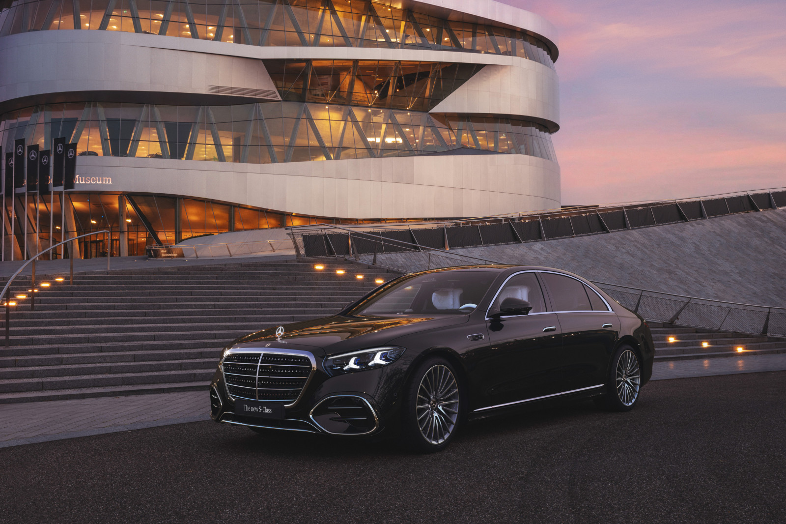
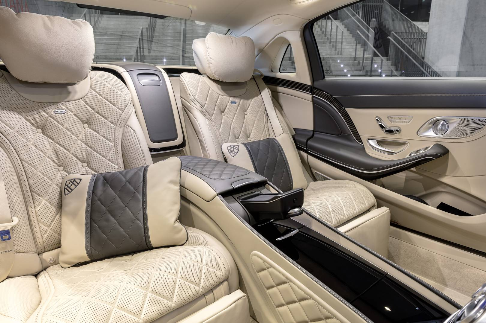

A Luxus Zászlóshajója
Ahol az élvonalbeli technológia, a mesteri kézművesség és a kompromisszummentes kényelem találkozik, hogy újraértelmezze a prémium mobilitás határait.
Konfiguráció & SpecifikációkVálassza ki a prémium fényezést és a kivitelt, hogy megtalálja az Ön egyéniségéhez tökéletesen illeszkedő S-Class modellt.
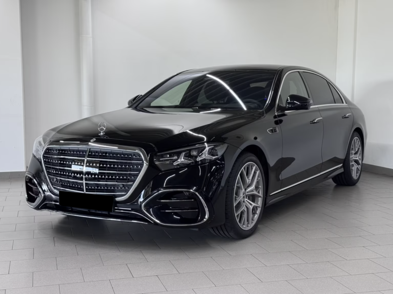
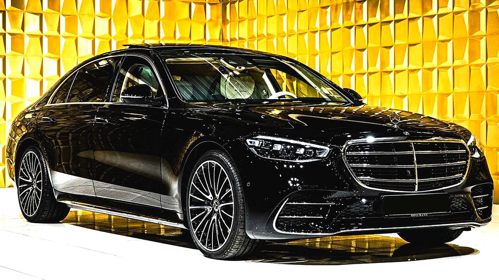
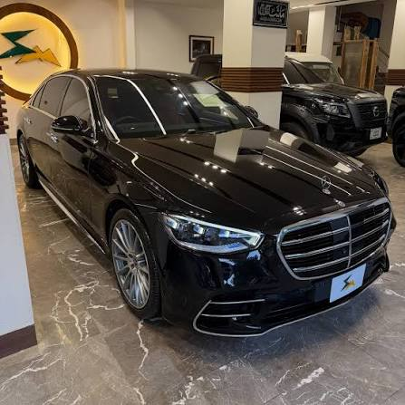
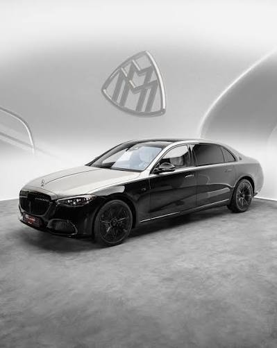
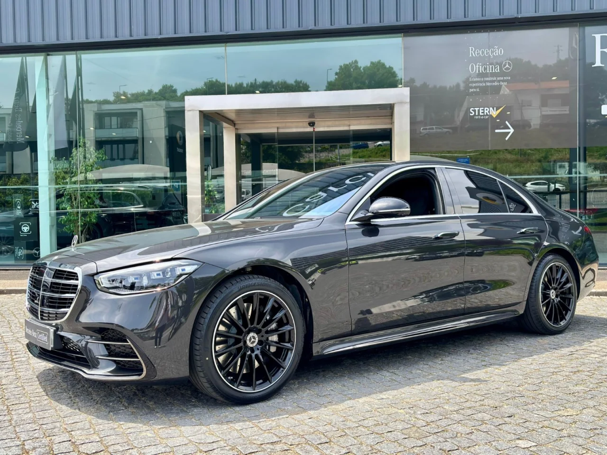
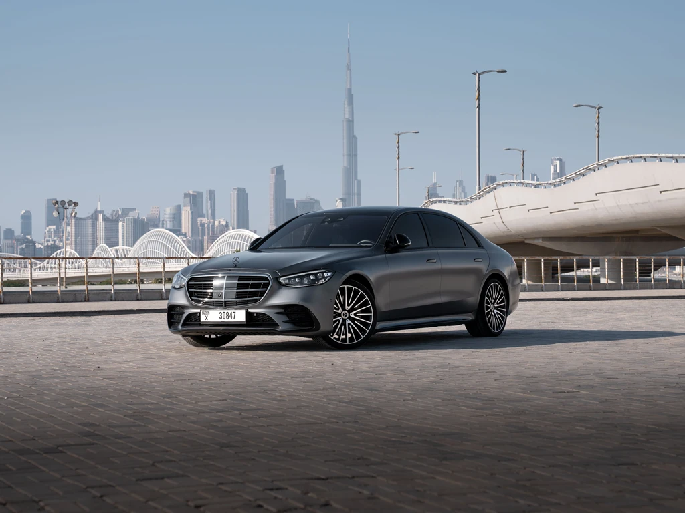
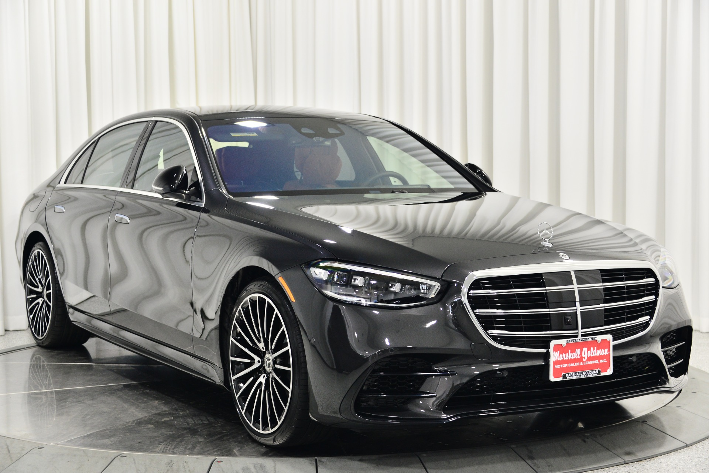
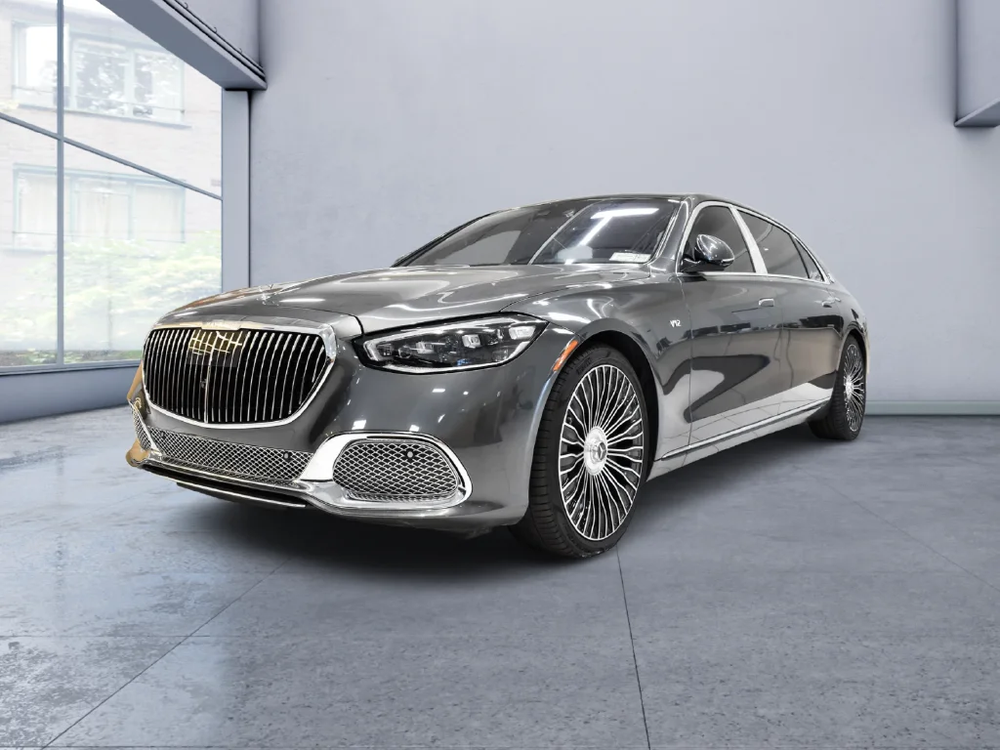
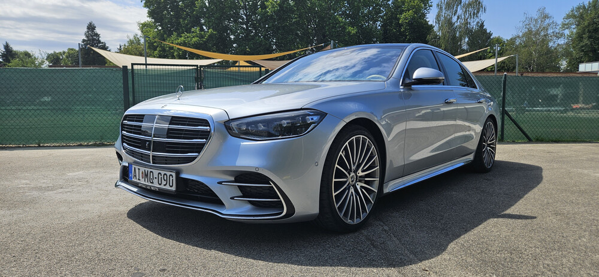
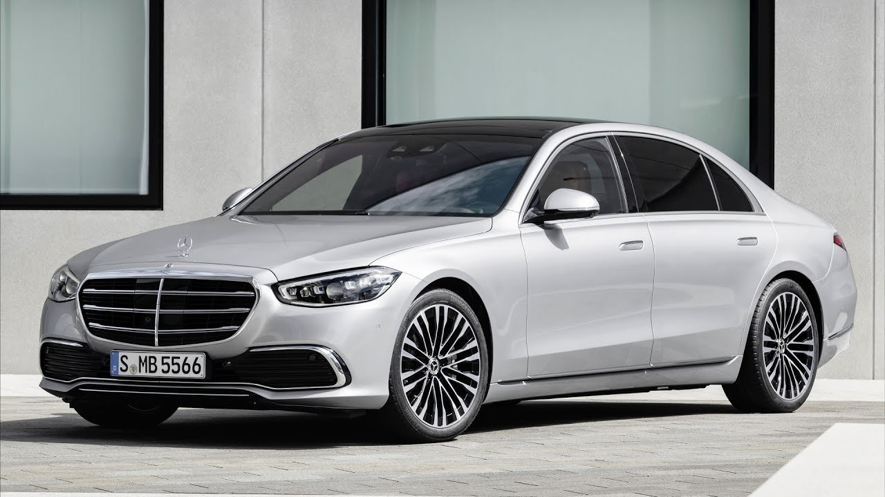
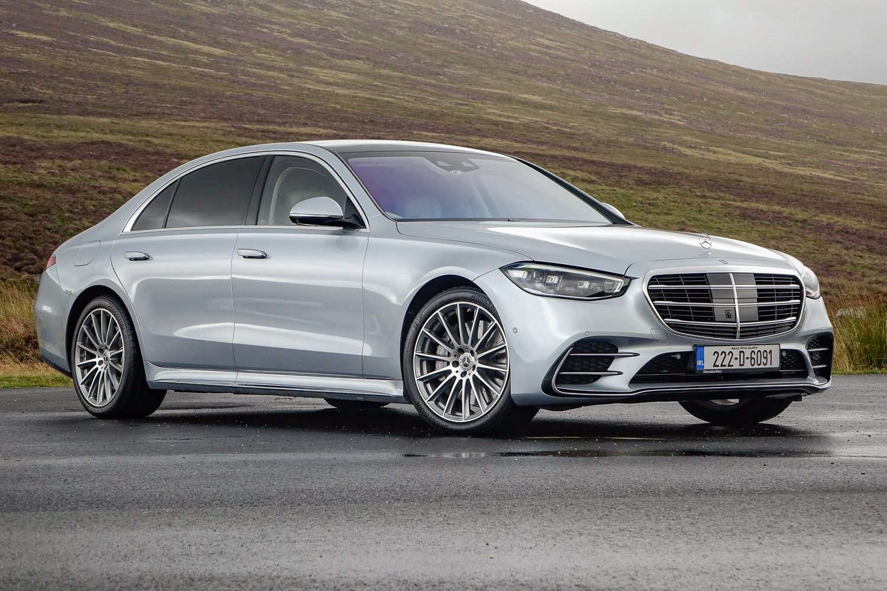
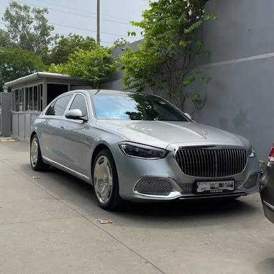
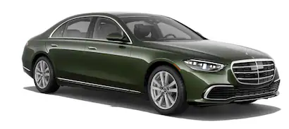
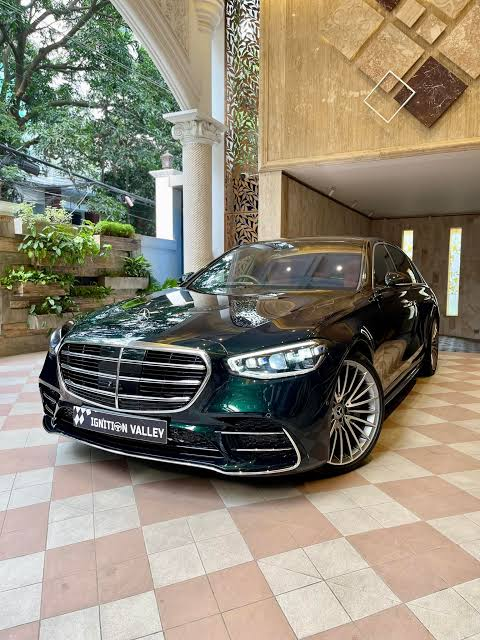
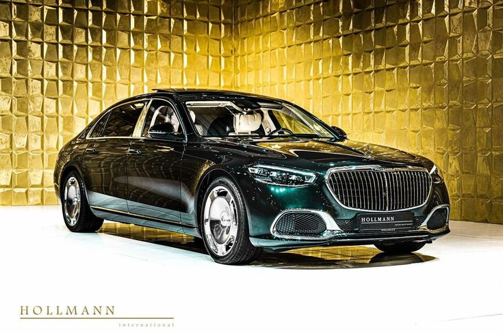
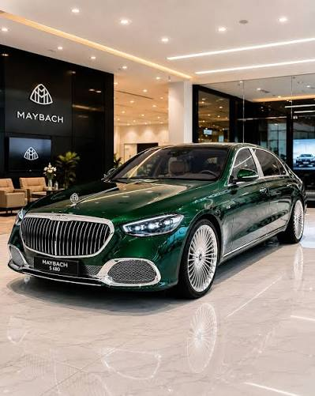
Az S-Class utastere nem csupán egy utazási helyszín, hanem egy guruló wellness-szalon és digitális parancsnoki központ.
OLED központi kijelző és kiterjesztett valóságú Head-up Display, amely a navigációs információkat közvetlenül a vezető látóterébe vetíti.
Összehangolt klíma, ülésfűtés/szellőztetés, masszázsprogramok és hangulatvilágítás az utasok aktuális hangulatához igazítva.
Akár 10 fokos elfordulási szög a hátsó kerekeken, amelynek köszönhetően a nagyméretű zászlóshajó fordulóköre egy kompakt autóéval vetekszik.
31 prémium hangszóró és az ülésekbe épített rezegtetők alakítják át a zenehallgatást fizikai élménnyé.
Több millió pixeles felbontású világítási rendszer, amely képes figyelmeztetéseket vetíteni az úttestre.
Mindössze 15 perc alatt akár 300 kilométernyi hatótávolságnak megfelelő energiát képes felvenni az akkumulátor.
Tekintse át a legfontosabb motorizációs és teljesítményparamétereket.
| Jellemző | S 450 d 4MATIC | S 500 4MATIC | Maybach S 680 |
|---|---|---|---|
| Motor Típusa | 3.0L Soros 6 hengeres dízel | 3.0L Soros 6 hengeres benzin | 6.0L V12 biturbó |
| Teljesítmény | 367 LE (+ 23 LE hibrid) | 435 LE (+ 22 LE hibrid) | 612 LE |
| Nyomaték | 750 Nm | 520 Nm | 900 Nm |
| Gyorsulás (0-100 km/h) | 5.0 mp | 4.9 mp | 4.5 mp |
| Végsebesség | 250 km/h (elektronikusan korlátozott) | 250 km/h | 250 km/h |
Pillantson be a részletekbe, amelyek az S-Class modellt a világ legkedveltebb luxusautójává teszik.

